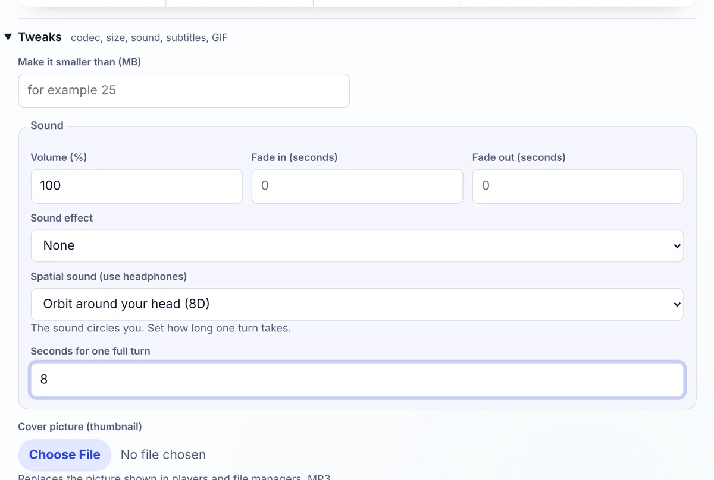
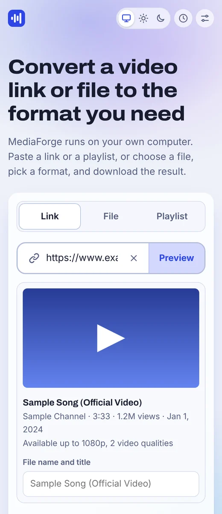
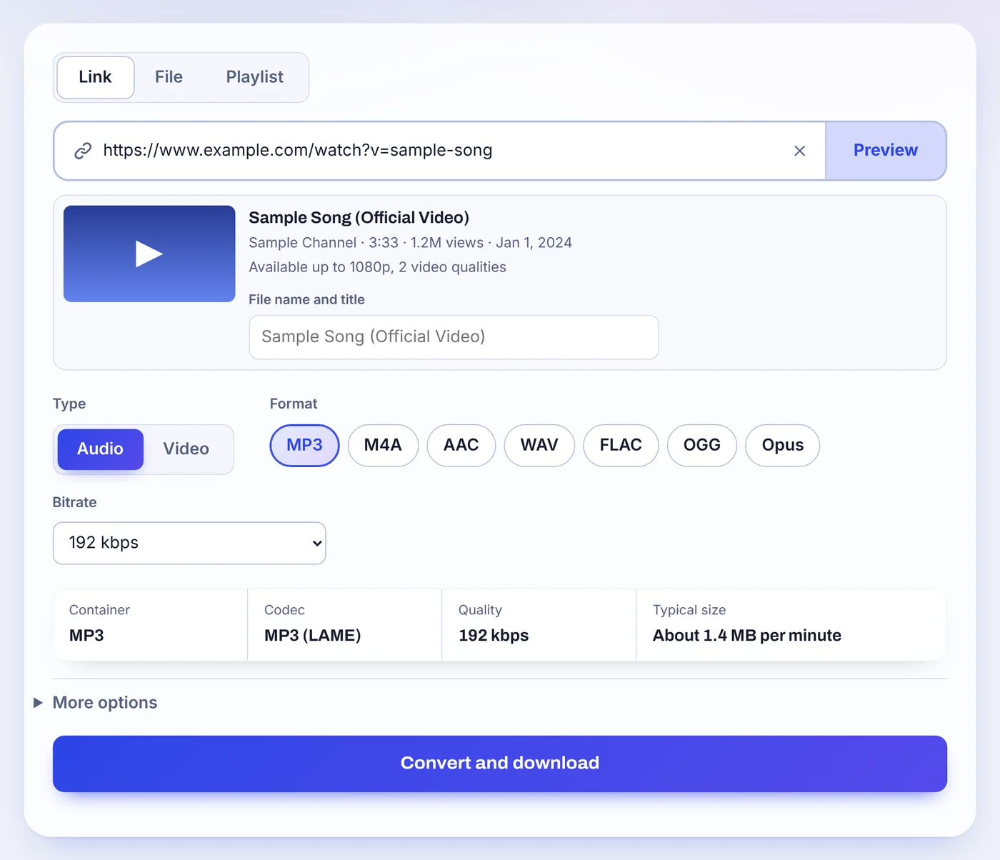

Links and files
Paste a link from any site that yt-dlp supports, or drop in a local audio or video file. Preview the title, channel and length before you convert.
Paste a video link or choose a file, pick a format, and download the result. MediaForge is free and open source, needs no account, and does the converting on your machine.
Windows 10 and 11, no installer. Also runs with Docker, or from source on macOS and Linux.
Paste a link from any site that yt-dlp supports, or drop in a local audio or video file. Preview the title, channel and length before you convert.
MP3, M4A, AAC, WAV, FLAC, OGG and Opus for audio. MP4, WebM and MKV for video, at any quality the video offers, including 1440p and 4K. Nothing is upscaled.
Choose the videos you want, then save them to a folder, download a ZIP, or both. Titles, artist, album, track number and cover art are written into the files.
Even out the volume, trim part of a video, embed subtitles, skip sponsor segments, split by chapter, or shrink a file to a target size.
Every failure has a clear title, a code such as MF-NET-01, and an explanation of what happened and what to try next.
Nothing is uploaded to a conversion service. Links to private network addresses are blocked, and temporary files are deleted after each download.
Every format is made by FFmpeg on your computer. Lossy audio formats let you choose a bitrate, and the page shows the codec and a typical file size before you start.
| Format | Type | Good for |
|---|---|---|
| MP3 | Audio, lossy | Plays everywhere: phones, cars, older players. |
| M4A and AAC | Audio, lossy | Good quality at small sizes. Common on Apple devices. |
| Opus and OGG Vorbis | Audio, lossy | The best quality for the size. Open formats. |
| FLAC and WAV | Audio, lossless | Archiving and editing. Large files. |
| MP4 (H.264) | Video | The most compatible video format. |
| WebM (VP9) and MKV | Video | High resolutions such as 1440p and 4K, and files with chapters and several audio tracks. |
Make a stereo track circle your head, come from the front, the back or one side, or sound like speakers placed around a room. MediaForge uses FFmpeg's sofalizer filter with a bundled head-related transfer function, so the placement is binaural rather than a simple left-right pan.
There is also a movie-style surround preset. If the source already has 5.1 channels, it is folded down to a stereo version that keeps front, side and rear placement.
Spatial effects are built for headphones. On speakers, or with a surround mode such as Windows Sonic already switched on, the difference is small.


The interface adapts from a small phone to a wide desktop. Start MediaForge on your computer with the --lan option, open the address on your phone, and use the same page. An optional access token protects it on a shared network.
Light, dark and system themes are built in, and the page follows your reduced-motion and reduced-transparency settings.
MediaForge is a small local web app. The page in your browser talks to a Python server on your own computer, and that server calls two well-known open-source tools: yt-dlp to fetch a link, and FFmpeg to convert it.

No Python needed. Download the zip, unzip it, and double-click MediaForge.exe. Your browser opens the page.
Bundles Python, FFmpeg and the JavaScript runtime.
git clone https://github.com/alwinsibym/mediaforge.git
cd mediaforge
docker compose up --buildThen open http://localhost:8000.
Python 3.10 or newer and FFmpeg. Works on Windows, macOS and Linux.
git clone https://github.com/alwinsibym/mediaforge.git
cd mediaforge/backend
python -m venv .venv
pip install -r requirements.txt
cd .. && python run.pyActivate the virtual environment first. Full steps in the README.
A step-by-step guide with pictures is in the install guide.
Yes. MediaForge is released under the MIT licence and uses only free, open-source tools: FastAPI, yt-dlp and FFmpeg. There are no accounts, API keys or paid tiers.
The server runs locally and your files stay on your machine. The only network traffic is the download of the link you ask for, and the optional yt-dlp update you start yourself.
Any site yt-dlp supports. Sites that need a sign-in, such as age-restricted videos, can use the sign-in of a browser on your computer, chosen in Settings.
Use it for content you own, content under a licence that permits copying (for example Creative Commons), or other material you have the right to download. Many sites restrict downloading in their terms of service, and copyright law applies. You are responsible for how you use it. MediaForge is built to run locally and is not meant to be hosted as a public conversion service.
The program is not code-signed, so Windows SmartScreen shows a warning for software it has not seen before. Choose More info, then Run anyway. The source code and the build workflow are public if you want to check them.
Sites change often. Open Settings and choose Update yt-dlp, then try again. Each error shows a code and a suggested fix, and you can report a problem on the issues page.